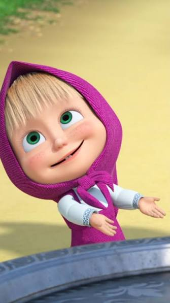
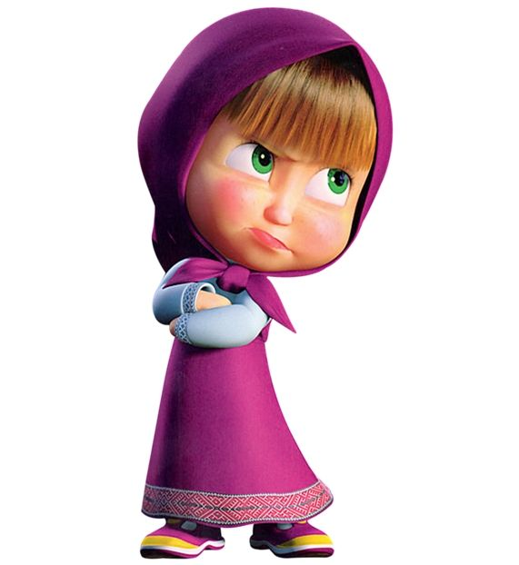
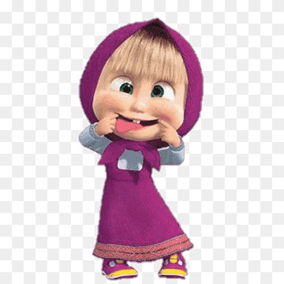

Vou compartilhar conhecimentos sobre tecnologia e programação

seja bem-vindo(a)!
por:Beatriz pinheiro
Boas vindas A série de animação Masha e o Urso! foi criada pelo diretor, roteirista e animador russo Oleg Kuzovkov. A ideia surgiu em 1996, quando Kuzovkov estava na praia e viu uma garotinha tão ativa, travessa e genuína que os adultos acabavam se escondendo dela para conseguir descansar. Anos mais tarde, ele usou essa inspiração e a uniu a um famoso conto folclórico tradicional russo sobre uma menina e um urso, desenvolvendo o projeto que estreou na televisão em 2009 através do estúdio.

criação da série animada
por:Beatriz pinheiro
A série de animação Masha e o Urso! foi criada pelo diretor, roteirista e animador russo Oleg Kuzovkov. A ideia surgiu em 1996, quando Kuzovkov estava na praia e viu uma garotinha tão ativa, travessa e genuína que os adultos acabavam se escondendo dela para conseguir descansar. Anos mais tarde, ele usou essa inspiração e a uniu a um famoso conto folclórico tradicional russo sobre uma menina e um urso, desenvolvendo o projeto que estreou na televisão em 2009 através do estúdio.
O animador russo Oleg Kuzovkov criou a personagem e a série animada Masha e o Urso.
Oleg Kuzovkov criou a animação baseando-se em contos do folclore russo tradicional.A produção da série é feita pelo Animaccord Studios.O desenho estreou em 2009 e tornou-se um sucesso mundial.
detalhes da criação
por:Beatriz pinheiro
Detalhes da criação Lançamento: O primeiro episódio estreou na Rússia em janeiro de 2009.Inspiração: A história baseia-se em um conto de fadas tradicional do folclore russo.Produção: O desenho é feito pelo estúdio russo Animaccord Studios. [1] (/goto?url=CAESZAHrOzAVWn3FA954w-N2BObPFeEUCoHiwwvhZAXGNP9K-Xc8E1jVthTLW1cL7zSc8O8gBwD7tdmi8vMqMwr_7jmqU7U7tL0af3kFN8q6_7d6aMVrizV8FhQJDmVRqOAmpH-60To), [2] (/goto?url=CAESmwEB6zswFZK2Wfly2MUkuVr84yJFFzLjbjfjgbCxIFalb8YWvTcSkjRaZrVSRe-kTlC5onzM849jqnsjzbEF_yfJg90P8VQhBIc9KVZeXAmZFEpq7ANKF-FzHIS10oP-NnfegS9wM73jXYVvYQ3IM1w8rsLbXHbkCkI0i2kCWagv8rlU63cGcFP-Q7FNdBglBGX_BswsXosHZ0h2Rg), [3] (/goto?url=CAESdQHrOzAVikWw13YA3f26MuzBmqG_ejwbQTU4tlrFED4ES1k-Zg_WPw0dYNYrg-aSSopufzGAibvmcivyQswR5BWZTCLX3YyX-QRWOr46mYkoeMtIna2yk701YKTnHYUh_0aAT8ErnZ13bh1nq78iH-blXiLbjA)Conheça mais sobre a curiosa origem e as lendas por trás da criação da série animada:
tecnologia.

por:Beatriz pinheiro
Masha é a protagonista da famosa animação russa Masha e o Urso, uma garotinha de cerca de três anos de idade, cheia de energia, hiperativa e extremamente curiosa. Ela vive em uma antiga estação de trem na floresta e tem como seu melhor amigo o Urso, um ex-artista de circo que tenta levar uma vida pacífica, mas acaba se tornando uma figura paternal e o "protetor" oficial de Masha contra as suas próprias traquinagens. A forma como as pessoas veem a Masha varia drasticamente entre o público infantil, os pais e analistas de mídia.Pelos olhos das criançasPara o público infantil, Masha é uma figura adorável e fascinante:
Identificação pura: As crianças se enxergam no comportamento livre de Masha, que explora o mundo sem os limites rígidos impostos pelos adultos. Divertida e destemida: Ela não tem medo de lobos, ursos ou do perigo, tratando tudo como uma grande brincadeira. Suas soluções criativas e energia contagiante fazem dela uma heroína cômica para os menores.
Pelos olhos dos pais (O "Pesadelo" do mau exemplo)Entre os adultos e educadores, a recepção da personagem divide muitas opiniões:Falta de limites: Muitos pais veem Masha como uma criança excessivamente mimada e destrutiva. Ela frequentemente invade a casa do Urso, quebra seus pertences, mexe onde não deve e raramente enfrenta consequências reais ou punições por suas ações. Comportamento replicado: Existe um receio comum de que crianças pequenas imitem a teimosia de Masha, ignorando a palavra "não" e desafiando a autoridade dos pais, já que o Urso sempre acaba cedendo aos caprichos dela. Teorias da Internet e CreepypastasNo universo online, surgiram diversas teorias da conspiração e histórias assustadoras (creepypastas) criadas por fãs:
Onde estão os pais? Pelo fato de Masha morar sozinha e os pais nunca aparecerem, internautas criaram a teoria sombria de que Masha seria, na verdade, um fantasma. Segundo o mito da internet, ela teria sido atacada por um urso real no passado, e o Urso do desenho seria uma representação de sua culpa ou um espírito protetor no além. Nota: Isso é apenas uma lenda urbana da internet; os criadores basearam a história puramente no folclore russo tradicional.,
.jpg)